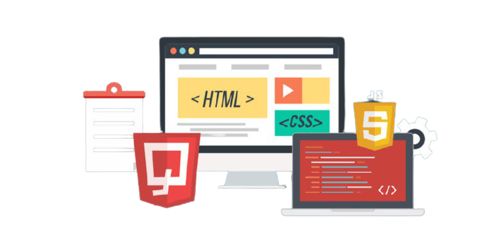

DESENVOLVEDOR WEB JUNIOR
O QUE UM JUNIOR DEVE SABER
- Lógica de Programação. Ter uma boa lógica de programação é um ponto dos pontos mais importantes
na base de um bom programador.
- Estrutura de controle e repetição.
- Estrutura de dados.
- Paradigmas de Programação.
- HTML.
- CSS.
- Javascript
DESENVOLVEDOR WEB PLENO
QUANDO SOU UM PLENO
O dev pleno aquele que já desenvolveu muitas linhas de código, foi testado pelos principais desafios das linguagens da stack e se sente pronto para pegar projetos mais individualistas e desafiadores. Normalmente, um desenvolvedor leva em torno de cinco anos para atingir sua plenitude.
DESENVOLVEDOR WEB SENIOR
QUANDO CONSIDERA UM SENIOR
O desenvolvedor sênior é um profissional mais experiente e com um alto nível de responsabilidade.
Em geral, possui graduação ou cursos técnicos na área de tecnologia e em média de cinco a oito anos de experiência de trabalho.
Este profissional deve ter o domínio do conjunto de tecnologias da empresa e proficiência em buscar soluções para problemas críticos.

MERCADO DE TI : APAGAO NA AREA
O mercado digital já vivia um período de constante expansão e de transformações exponenciais, com novas tecnologias chegando a todo momento. Com a crise trazida pela pandemia, esse movimento ganhou um novo status: pesquisas indicam que em alguns meses do ano 2020, avançamos o equivalente a 7 anos de desenvolvimento tecnológico.
Mas um fator determinante pode representar uma ameaça à transformação tecnológica que desejamos alcançar: pessoas. Se nada for feito, muito em breve enfrentaremos um profundo déficit de talentos digitais para exercer diversas funções relacionadas à produção de tecnologias, como engenharia de software, programação, designer, entre outras.
Se de um lado faltam profissionais qualificados para as áreas de tecnologia, do outro, 20 milhões de brasileiros não têm emprego. Destes, 14,1 milhões estão em busca de um trabalho, enquanto os outros 5,9 milhões já desistiram de procurar, de acordo com o IBGE. Essa situação é absolutamente paradoxal, demonstrando o quanto falhamos em alinhar políticas de formação profissional, emprego e renda.
Diversos cargos na área de tecnologia estão vazios por falta de mão de obra qualificada. Mais de um terço das vagas em tecnologia fica aberta por mais de dois meses, de acordo com estudo da Indeed. Engenheiro de Software, Desenvolvedor Java e Desenvolvedor Android são alguns dos cargos mais difíceis de preencher, cada um com mais de 38% das vagas abertas há mais de 60 dias.
Segundo pesquisa realizada pelo BrazilLAB e pela Fundação Brava, em parceria com o Center for Public Impact (CPI), caso nenhuma medida seja tomada, o déficit de profissionais digitais pode atingir o alarmante número de mais de 300 mil pessoas até o ano de 2024. De acordo com a Associação Brasileira das Empresas de Tecnologia da Informação e Comunicação (Brasscom), hoje, o Brasil forma 46 mil profissionais com perfil tecnológico por ano.
Dois desafios principais precisam ser superados quando falamos da formação de profissionais digitais. Primeiro, garantir escala. É preciso ampliar muito e rápido o número de pessoas capacitadas a trabalhar com tecnologias. Segundo, a qualidade. Precisamos de especialistas que possam se tornar verdadeiras lideranças em projetos de transformação digital, seja no setor privado ou no público.
Temos visto com mais frequência entidades e empresas que estão se dedicando a formar novos profissionais. A Alpha Edtech é um desses exemplos. Lançada em 2020, a Alpha é uma escola de programação no modelo bootcamp. Os alunos selecionados recebem uma bolsa de estudos no valor de R$ 1 mil por mês, patrocinada por empresas do setor, para viabilizar a dedicação exclusiva ao programa de formação e, ao final, são contratados para que possam trabalhar como programadores.
A primeira turma selecionou 31 candidatos de todas as regiões do Brasil e todos já foram alocados em empresas parceiras da iniciativa. A preocupação com a diversidade é uma constante: 39% da turma é formada por mulheres, número muito superior ao observado no mercado de trabalho de tecnologia, no qual o público feminino representa somente 20% do total de profissionais.
A iniciativa também está alinhada aos desafios do contexto brasileiro, ao mesmo tempo em que prioriza a qualidade da formação: os alunos passam por cursos de nivelamento para reforçar os conhecimentos de pensamento matemático e inglês, além de terem acesso a conteúdos de soft skills, desenvolvendo as habilidades tão necessárias para a inovação, como resiliência, adaptabilidade e paixão por aprender.
Há muitas oportunidades pela frente
Não faltam oportunidades nessa área, mas precisamos de talentos que possam ocupar esses cargos. Por isso, programas de incentivo são tão importantes e devem ser uma prioridade estratégica caso o Brasil deseje se tornar uma referência e aproveitar as oportunidades trazidas pela revolução digital.
Precisamos garantir a diversidade e inclusão do maior número de pessoas na economia digital, com profissionais preparados para ocupar posições de trabalho que tenham alto valor agregado e de retorno econômico. Vale destacar que ainda o segmento de tecnologia é mais masculino e branco do que a média do mercado de trabalho. Só 37% dos profissionais são mulheres e apenas 30% se declaram pretos ou pardos, de acordo com a Brasscom.
Ainda dá tempo de reverter esse cenário e trazer mais pessoas para esse lado da força. O desenvolvimento de tecnologias pode ser também um instrumento de inclusão social e espaço para a construção de emprego e renda dignos para as pessoas. As oportunidades já estão todas na mesa. Precisamos estar atentas e atentos para sermos protagonistas e não meros espectadores dessa transformação.
JUNIOR
FULL STACK JUNIOR
O salário médio de Desenvolvedor Fullstack Júnior é de R$ 3.214,00. por mês no Brasil. A remuneração minima em dinheiro de Desenvolvedor Fullstack Júnior no Brasil é de 2,529
variando entre 2,529,00. e 5,085,00. As estimativas de salários têm como base 60 salários enviados de forma sigilosa ao Glassdoor por pessoas com o cargo de Desenvolvedor Fullstack Júnior em Brasil.
PLENO
FULL STACK PLENO
No cargo de Full Stack Developer se inicia ganhando R$ 3.033,00 de salário e pode vir a ganhar até R$ 6.849,00. A média salarial para Full Stack Developer no Brasil é de R$ 4.597,00. A formação mais comum é de Graduação em Sistemas de Informação (Análise de Sistemas).
SENIOR
FULL STACK SENIOR
O salário médio nacional de um Desenvolvedor Full Stack Sênior é de R$ 8.493 por mês em Brasil.
O desenvolvedor full stack SENIOR é capaz de trabalhar com toda a pilha de desenvolvimento de um projeto. Além de conseguir atuar com o font-end e o back-end, esse profissional também pode contribuir em todas as etapas e partes de um sistema, como o servidor e o banco de dados.
A HISTORIA DE HTML
O HTML foi criado em 1991, por Tim Berners-Lee, no CERN (European Council for Nuclear Research) na suíça. ... Em 1992, foi liberada a biblioteca de desenvolvimento WWW ( World Wide Web), uma rede de alcance mundial, que junto com o HTML proporcionou o uso em escala mundial da WEB.
JAVA SCRIPT
O JavaScript foi criado na década de 90 por Brendan Eich a serviço da Netscape.
Essa década foi um período de revolução, pois os browsers ainda eram estáticos. O navegador mais popular dessa época era o Mosaic, da NCSA.
Em 1995, a Netscape contratou Brendan Eich para criar uma
linguagem que proporcionasse isso.
CSS
Em 1995, Håkon Wium Lie e Bert Bos apresentaram
a proposta do CSS(Cascading Style Sheets) que logo foi apoiada pela W3C.
A idéia geral era, utilizar HTML somente para estruturar o website e a tarefa de apresentação fica com o CSS disposto em um arquivo separado
.css ou no proprio HTML demarcado pelas tags .
PYTHON
Python foi criado no final dos anos oitenta(1989) por Guido van Rossum no Centro de Matemática e Tecnológia da Informação (CWI, Centrum Wiskunde e Informatica), na Holanda, como sucessor da linguagem de programação ABC, capaz de lidar com exceções e interagir com o sistema operacional Amoeba.
SOMOS TERA
QUE BOM QUE VOÇE VEIO!
Bons programadores sabem o que escrever . Os melhores sabem o que reescrever.
Estude! Na hora da verdade ninguém engana a vida, é possível enganar o professor, os pais e as pessoas que estão acreditando em você, mas enganar a vida é impossível. Na hora da verdade a vida se encarrega de colocar todas as pessoas no devido lugar, Quanto maior for meu estudo, menores serão as chances de cair no fracasso.
Por muito tempo eu não entendi como algo tão caro pudesse ser tão inútil. Aí eu percebi que os computadores são máquinas estúpidas capazes de fazer coisas incrivelmente inteligentes; enquanto que os programadores são pessoas inteligentes capazes de fazer coisas incrivelmente estúpidas. Em resumo, nasceram um para o outro.
Estudar é um privilégio e só o seu esforço pessoal te levará a conhecer pessoas e mundos que os acomodados jamais conhecerão! Deus ajuda quem senta e estuda. O conhecimento é a única coisa que ninguém pode tirar de você. Comece a estudar hoje para vencer amanhã. . . . . As raízes do estudo são amargas, mas seus frutos são doces.
Medir o progresso da programação por linhas de código é como medir o progresso da construção de aeronaves.
A programação hoje em dia é uma corrida entre engenheiros de software tentando fazer programas maiores e melhores a prova de idiotas e o universo tentando fazer idiotas maiores e melhores.
- guil vitor
- 19 anos
- bahia
- estudante
- tera
- dev
dev
full stack
developer